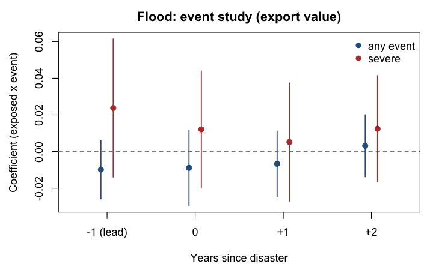
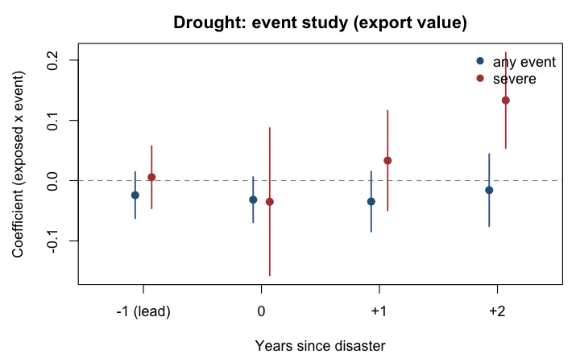
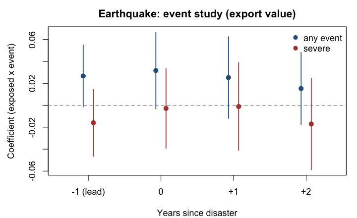
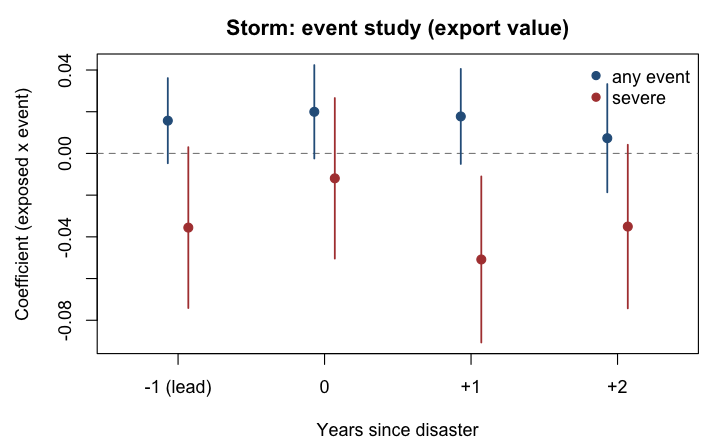

Auto-generated by R/12_results_report.R from the fitted model objects — no hand-transcribed numbers. Signif: *** 0.1%, ** 1%, * 5%, + 10%. PPML, three-way FE (iso3×year, chapter×year, iso3×chapter), SEs clustered by exporter. Sample 2001–2024. Coefficients ≈ proportional effects on exposed relative to unexposed products.
| any, year of | any, year after | severe, year of | severe, year after | |
|---|---|---|---|---|
| Flood | -0.0227* (0.0107) | -0.0033 (0.0090) | 0.0257 (0.0209) | 0.0032 (0.0157) |
| Drought | -0.0363+ (0.0212) | -0.0316+ (0.0192) | 0.0280 (0.0720) | 0.0253 (0.0722) |
| Earthquake | 0.0358* (0.0162) | 0.0297+ (0.0152) | -0.0258 (0.0184) | -0.0258 (0.0197) |
| Storm | 0.0219* (0.0111) | 0.0228* (0.0106) | -0.0222 (0.0201) | -0.0442* (0.0177) |
| any, year of | any, year after | severe, year of | severe, year after | |
|---|---|---|---|---|
| Flood | -0.0854*** (0.0226) | -0.0149 (0.0300) | 0.0145 (0.0420) | -0.0224 (0.0342) |
| Drought | -0.0879 (0.0697) | -0.1959*** (0.0577) | 0.0710 (0.1195) | 0.0561 (0.1263) |
| Earthquake | 0.0932** (0.0312) | 0.0923** (0.0349) | -0.1921*** (0.0496) | -0.1457*** (0.0383) |
| Storm | 0.0210 (0.0305) | 0.0178 (0.0326) | -0.0232 (0.0415) | 0.0041 (0.0364) |
Each type conditional on the other three; robustness for co-occurring disasters (storms cause floods).
| any, year of | any, year after | severe, year of | severe, year after | |
|---|---|---|---|---|
| Flood | -0.0216+ (0.0111) | -0.0086 (0.0102) | 0.0277 (0.0209) | 0.0054 (0.0160) |
| Drought | -0.0366+ (0.0214) | -0.0312+ (0.0183) | 0.0279 (0.0719) | 0.0233 (0.0712) |
| Earthquake | 0.0364* (0.0173) | 0.0297+ (0.0154) | -0.0255 (0.0200) | -0.0259 (0.0207) |
| Storm | 0.0237* (0.0113) | 0.0216* (0.0110) | -0.0169 (0.0213) | -0.0375* (0.0190) |
| any, year of | any, year after | severe, year of | severe, year after | |
|---|---|---|---|---|
| Flood | -0.0867*** (0.0212) | -0.0235 (0.0303) | 0.0194 (0.0471) | -0.0166 (0.0395) |
| Drought | -0.0940 (0.0702) | -0.2034*** (0.0573) | 0.0701 (0.1184) | 0.0576 (0.1178) |
| Earthquake | 0.0913** (0.0317) | 0.0947** (0.0367) | -0.1895*** (0.0517) | -0.1549*** (0.0447) |
| Storm | 0.0239 (0.0285) | 0.0161 (0.0318) | 0.0117 (0.0443) | 0.0550 (0.0480) |
Blue: any event. Red: severe. Whiskers: 95% CI. The lead (-1) tests for pre-trends/anticipation.




Effect estimated freely per sector group — no exposure map imposed. Read this to judge the exposure maps, esp. storms.
| sector (vs chemicals) | Flood | Drought | Earthquake | Storm |
|---|---|---|---|---|
| animal_products | -0.013 | 0.064 | -0.011 | 0.011 |
| arms | -0.028 | 0.001 | -0.044 | 0.016 |
| art_antiques | -0.001 | 0.023 | -0.031 | 0.034 |
| base_metals | -0.009 | 0.047+ | 0.010 | -0.003 |
| fats_oils | -0.049+ | -0.025 | -0.065 | 0.032 |
| food_bev_tobacco | -0.020 | 0.029 | -0.023 | 0.016 |
| footwear_headgear | 0.039 | 0.057* | -0.061 | 0.111* |
| gems_precious | -0.032 | 0.153** | -0.009 | -0.058* |
| instruments | -0.043 | -0.007 | -0.043+ | -0.011 |
| leather_fur | 0.075 | 0.074* | 0.023 | 0.133* |
| machinery_electrical | -0.020 | -0.025 | 0.011 | -0.005 |
| minerals_fuels | 0.014 | 0.223+ | -0.069* | -0.026 |
| misc_manufactures | -0.032 | 0.005 | -0.016 | 0.012 |
| paper_print | 0.000 | 0.018 | -0.017 | 0.011 |
| plastics_rubber | -0.020 | 0.018 | -0.010 | -0.019 |
| stone_glass_ceramic | -0.016 | 0.017 | -0.022 | -0.018 |
| textiles_apparel | 0.029 | 0.024 | -0.035 | 0.034 |
| transport_equipment | -0.032 | 0.011 | 0.002 | -0.020 |
| vegetable_products | -0.046* | -0.008 | -0.014 | 0.000 |
| wood_products | -0.001 | 0.052 | 0.006 | 0.025 |